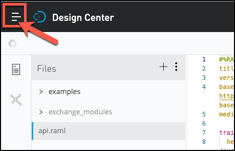
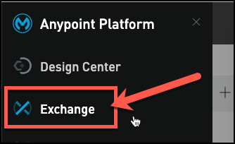
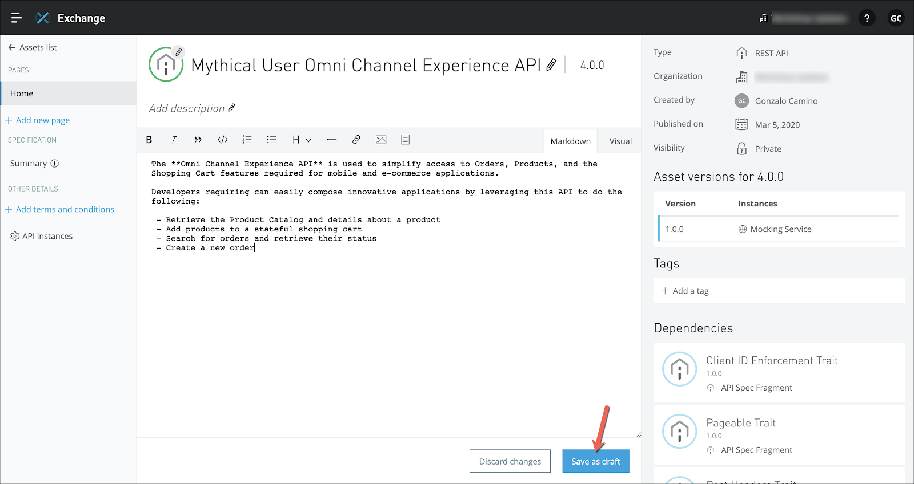

Como se demostró , publicar su API en Exchange es tan fácil como unos pocos clics. Sin embargo, Exchange acaba de capturar los atributos básicos y la documentación para su API en este momento. Asegurarse de que su API sea fácil de encontrar y "lista para el autoservicio" es su responsabilidad como diseñador de API. Busquemos nuestra API en Exchange y agreguemos más a nuestra documentación de API.


** Omni Channel Experience API * * se utiliza para simplificar el acceso a los pedidos, los productos y las funciones del carrito de la compra necesarios para las aplicaciones móviles y de comercio electrónico.
Los desarrolladores que lo requieran pueden componer fácilmente aplicaciones innovadoras aprovechando esta API para hacer lo siguiente:
- Recuperar el catálogo de productos y los detalles sobre un producto
- Agregar productos a un carrito de compras con estado
- Buscar pedidos y recuperar su estado
- Crear un nuevo pedido
Al igual que en el Design Center, en Exchange puede consultar el API Summary. El API Summary le brinda la oportunidad de realizar una solicitud y llamar al servicio simulado o una implementación de la API.
Vamos a ver cómo se puede hacer.